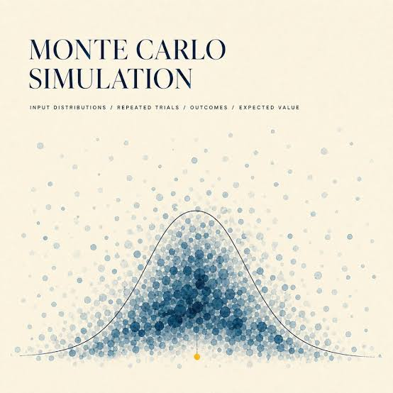

Si un problema es difícil de resolver analíticamente, podemos simularlo miles de veces y estudiar estadísticamente sus resultados.
Repetimos el experimento aleatorio muchas veces en la computadora
La media de los resultados estima la cantidad que buscamos
La probabilidad nos dice qué tan lejos podemos estar
Monte Carlo tiene una aproximación del error absoluto que se comporta como \(\sigma/\sqrt{N}\) en virtud del Teorema del Límite Central
En promedio, el estimador acierta: no se inclina sistemáticamente hacia arriba ni hacia abajo.
Por la Ley de los Grandes Números, con suficientes simulaciones la estimación se acerca al valor real.
Para reducir el error 10 veces se necesitan 100 veces más simulaciones, sin importar la dimensión del problema.
Gracias al TLC no solo damos un número: damos un rango con 95 % de confianza (\(z=1.96\)).
Escribir la cantidad buscada como una esperanza \(\theta=\mathbb{E}[g(X)]\).
Un generador con semilla produce \(U_1,U_2,\dots\sim\text{Unif}(0,1)\) reproducibles.
Transformar los uniformes en muestras del modelo y evaluar \(g\) en cada una.
Promediar: \(\hat\theta_N=\frac1N\sum_{i=1}^N g(X_i)\).
Error estándar \(\hat\sigma/\sqrt N\) e intervalo de confianza.
El error baja como \(1/\sqrt N\): cada dígito extra de precisión cuesta 100 veces más simulaciones.
Si \(g(X)\) varía mucho, el error es grande; se necesitan técnicas de reducción de varianza.
Para estimar probabilidades muy pequeñas casi ninguna simulación “acierta” y el error relativo explota.
Los números son pseudoaleatorios: un mal generador introduce correlaciones y sesgo.
Simular perfecto un modelo equivocado da una respuesta precisa… pero incorrecta.
Siempre hay ruido: cada corrida da un número distinto, por eso reportamos intervalos.
Estimamos \(\pi\) muchas veces con distintos \(N\). En escala log–log el error cae con pendiente \(-\tfrac12\).
Se lanzan dos dados. \(A :=\) “la suma es mayor que 10”
Cada pelea ocurre una sola vez: con un resultado no sabemos si la cuota estaba bien o si fue suerte. Monte Carlo imita el azar con números aleatorios, repite el experimento miles de veces y cuenta qué pasa.
El favorito gana con probabilidad \(p\): la cuota de apertura sin margen de la casa de apuestas.
Se sortea \(u\sim\text{Unif}(0,1)\). Si \(u<p\) gana el favorito; si no, hay sorpresa.
Miles de lanzamientos muestran qué resultados son normales y cuáles son raros.
Con pocas simulaciones el estimado brinca mucho; con más se estabiliza (ley de los grandes números) y el error baja como \(1/\sqrt{n}\).
Ahora la pregunta es más grande: ¿las cuotas aciertan con los favoritos?
Suponemos que sí (hipótesis nula) y volvemos a jugar todas las peleas del grupo, cada una con su propia moneda cargada. Cada repetición es una historia alternativa de la UFC.